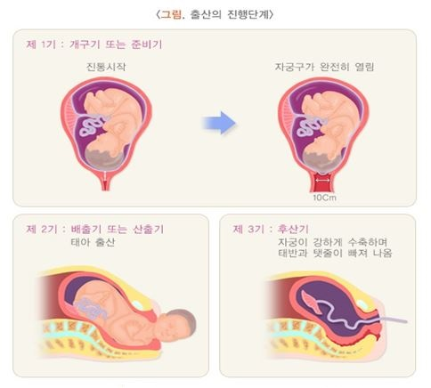

Sinh thường (자연분만) là phương pháp sinh qua đường âm đạo (질을 통해 태아를 분만) và còn được gọi là sinh
âm đạo
tự nhiên (질식분만) hoặc sinh bình thường (정상분만). Quá trình sinh bình thường (정상분만) được chia thành
ba giai đoạn: Giai đoạn 1 (제1기) là khi cơn co thắt bắt đầu và cổ tử cung (자궁 입구) mở hoàn toàn,
Giai đoạn 2 (제2기) là khi thai nhi (태아) di chuyển xuống và được sinh ra, Giai đoạn 3 (제3단계) là
khi nhau thai (태반) được tống ra khỏi tử cung. Thời gian sinh trung bình đối với phụ nữ sinh lần
đầu (초산) thường từ 9–18 giờ, đối với phụ nữ đã sinh (경산) khoảng 6–13 giờ. Việc áp dụng các kỹ
thuật thở đúng cách và gây tê giảm đau (무통 시술) trong quá trình sinh có thể giúp giảm đau cơn co
thắt.
🍀 Giai đoạn 1 của sinh nở (분만 1기 / 개구기 hoặc 준비기)
- Giai đoạn này kéo dài từ khi cơn co thắt bắt đầu đến khi cổ tử cung mở hoàn toàn, từ trạng
thái
đóng đến mở 10 cm. Đây là giai đoạn chiếm nhiều thời gian nhất trong tổng quá trình sinh, trung
bình khoảng 10–12 giờ đối với phụ nữ sinh lần đầu, và 4–6 giờ đối với phụ nữ đã
sinh.
- Khi cơn co
thắt kéo dài khoảng 1 phút và xuất hiện cách nhau 2–3 phút, áp lực trong tử cung tăng lên và cổ
tử cung bắt đầu mở. Thai nhi chuẩn bị đi qua khung chậu bằng cách cúi đầu và đưa cằm áp vào
ngực.
- Ở giai đoạn đầu, cơn co xuất hiện cách nhau khoảng 10 phút, dần dần khoảng cách co ngắn
lại và thời gian co kéo dài hơn. Ở giai đoạn sau, cơn co xuất hiện mỗi 2–3 phút, cổ tử cung mở
hoàn toàn và màng ối (양막) có thể vỡ.
- Nhân viên y tế sẽ kiểm tra bằng khám âm đạo (내진) để đánh giá mức độ mở của cổ tử cung, độ mềm
mại của đường sinh, tình trạng vỡ màng ối và mức độ hạ của thai nhi. Nhịp tim thai (태아 심박동) được
theo dõi bằng thiết bị giám sát điện tử để đảm bảo an toàn cho thai nhi. Nếu cơn co quá yếu và
sinh tiến triển chậm, tùy trường hợp, thuốc gây co tử cung (자궁수축제) có thể được sử dụng.
🍀 Giai đoạn 2 của sinh nở (분만 2기 / 배출기 hoặc 산출기)
- Bắt đầu từ khi cổ tử cung mở hoàn toàn đến khi em bé được sinh ra. Thời gian trung bình khoảng
2–3 giờ đối với phụ nữ sinh lần đầu và 1–1,5 giờ đối với phụ nữ đã sinh, tuy có sự
khác biệt cá
nhân. Dù ngắn hơn so với giai đoạn 1, đây là giai đoạn quan trọng để thai nhi ra ngoài.
- Trong
giai đoạn này, bác sĩ có thể thực hiện cắt tầng sinh môn (회음절개) để hỗ trợ quá trình sinh thuận
lợi.
🍀 Giai đoạn 3 của sinh nở (분만 3기 / 후산기)
- Là giai đoạn từ khi em bé chào đời đến khi nhau thai được tống ra. Khoảng 5–10 phút sau khi
sinh, tử cung co mạnh để đẩy nhau thai ra ngoài.
- Nhau thai thường được tống ra trong vòng 20–30
phút, cùng với cuống rốn (탯줄), kết thúc quá trình sinh.
- Sau khi nhau thai ra, nhân viên y tế
kiểm tra xem tử cung co tốt không, có chảy máu không, có sót nhau hay mô còn lại trong tử cung
không, và vết thương có ổn không, đồng thời khâu lại vùng cắt tầng sinh môn.
- Ngoài ra, tình
trạng hô hấp, bất thường về hình thể hoặc bệnh lý của trẻ sơ sinh cũng được kiểm tra.

🛑 Chuẩn bị sinh (분만준비사항)
Khi các dấu hiệu báo sinh xuất hiện và mẹ đến bệnh viện, siêu âm và khám sản khoa xác nhận quá
trình sinh đang tiến triển, mẹ sẽ được nhập viện, thực hiện các bước chuẩn bị như nhịn ăn, thụt
tháo, truyền dịch, cạo lông vùng tầng sinh môn nếu cần.
🛑 Quá trình sinh thực tế (실제 분만과정)
1️⃣ Theo dõi thai nhi và quan sát sản phụ (태아감시 및 산모관찰)
- Khi nhập viện, trước tiên sẽ kiểm tra huyết áp, nhiệt độ, mạch, nhịp thở của mẹ và xem lại hồ
sơ
tiền sản. Nếu lông vùng âm hộ (회음부) cản trở quá trình sinh, sẽ tiến hành cạo lông. Bác sĩ sẽ
khám âm đạo để theo dõi tiến trình sinh, đồng thời thực hiện thụt tháo giai đoạn đầu của cơn co
để giảm nguy cơ nhiễm trùng do phân trong quá trình sinh.
- Trong quá trình chuyển dạ, cường độ co tử cung (자궁 수축정도) và nhịp tim thai (태아 심장박동) được quan
sát bằng thiết bị giám sát nhịp tim thai điện tử (전자태아심박동감시 모니터) để theo dõi tình trạng thai
nhi.
2️⃣ Tiến trình sinh (분만진행)
Khi cổ tử cung (자궁경부) mở hoàn toàn và thai nhi (태아) hạ xuống, sản phụ nằm trên bàn sinh (분만대) và
thực hiện các tư thế theo hướng dẫn của nhân viên y tế, đồng thời bắt đầu rặn theo nhịp cơn co
tử cung (자궁의 수축주기). Tư thế phổ biến nhất trong quá trình sinh là tư thế nằm ngửa, chân đặt trên
bàn sinh với hỗ trợ chân, còn gọi là tư thế kiểm tra khung chậu mặt lưng (등쪽면 골반내진자세).
3️⃣ Cắt tầng sinh môn (회음절개술)
Trong quá trình sinh, nếu thai nhi to hoặc cần sinh bằng hút (흡인분만), hoặc để tránh rách nhiều
nhánh của tầng sinh môn (회음부), bác sĩ sẽ thực hiện cắt tầng sinh môn (회음절개) theo hướng an toàn
để bảo vệ sản phụ.
4️⃣ Cột dây rốn và tống nhau thai (제대 결찰 및 태반 만출)
Khi em bé được sinh ra, dây rốn (탯줄) được giữ bằng dụng cụ đã tiệt trùng, cắt ở độ dài phù hợp
và cột lại (제대 결찰) trước khi xử lý tiếp. Sau đó, nhau thai (태반) thường được tống ra tự nhiên
trong vòng 5–10 phút. Nếu nhau thai không tách ra tự nhiên, có thể yêu cầu sản phụ rặn thêm hoặc
trong trường hợp hiếm, bác sĩ sẽ lấy nhau bằng tay. Sau khi nhau thai ra, vết cắt tầng sinh môn
sẽ được khâu lại.
🛑 Quá trình sau sinh (분만 후 과정)
Sau sinh, sản phụ được theo dõi trong phòng hồi sức (회복실), kiểm tra huyết áp, nhịp tim, và các
dấu hiệu khác; nếu ổn định và không có biến chứng, sản phụ được chuyển về phòng bệnh. Vài giờ
sau sinh, theo chỉ dẫn của nhân viên y tế, sản phụ có thể bắt đầu ăn uống và nếu không có biến
chứng, có thể xuất viện sau 1–2 ngày.
🔰 Chăm sóc sức khỏe và lưu ý sau xuất viện (퇴원 후 건강관리 및 주의사항)
Khám lại sau sinh (출산 후 병원 내원): Khi xuất
viện, y tá sẽ thông báo lịch tái
khám, thường trong 1–3
tuần để kiểm tra tình trạng hồi phục của sản phụ. Một tháng sau sinh, khi sản dịch (오로) đã
hết,
sẽ tiến hành khám cổ tử cung (자궁경부암 검진) và kiểm tra các bất thường khác.
Đau sau sinh và sản dịch (산후통과
오로): Đau sau sinh (산후통) là cảm
giác đau do tử cung co thắt từng
lúc sau sinh. Đau này thường gặp nhiều hơn ở phụ nữ đã sinh (경산부), do hormone oxytocin tiết
ra
khi bé bú kích thích tử cung co. Đây là hiện tượng bình thường giúp tống máu cục trong tử
cung
và nếu đau nhiều có thể dùng thuốc giảm đau như Tylenol. Sản dịch (오로) là chất dịch có lẫn
máu
chảy từ tử cung, màu sắc và lượng giảm dần khi hồi phục. Nếu sau 3 tuần sản dịch vẫn nhiều
và đỏ
kéo dài, cần đi khám.
Chăm sóc tầng sinh môn và ngâm hậu môn
(회음부 관리와 좌욕): Trong
sinh thường, mô âm đạo và tầng sinh
môn có thể bị tổn thương, đôi khi thực hiện cắt tầng sinh môn. Để giảm nguy cơ nhiễm trùng
và
thúc đẩy lành vết thương, cần chăm sóc tầng sinh môn và ngâm hậu môn. Khi thay băng vệ sinh,
rửa
tay sạch, tháo băng từ trước ra sau để tránh vi khuẩn từ hậu môn chạm vùng tầng sinh môn,
lau
khô tương tự. Ngâm hậu môn bằng nước ấm 2–3 lần/ngày. Tránh rửa sâu âm đạo quá mức, xịt
bidet
mạnh, hoặc chườm nóng trực tiếp để tránh vết thương nứt hoặc viêm.
Tắm (목욕): Có thể tắm vòi sen
(샤워) sau sinh, tắm ngâm toàn thân
(통목욕) nên thực hiện khi sản dịch
đã hết.
Phục hồi chức năng bàng quang (방광기능
회복): Sau sinh, bàng quang
có thể phục hồi chậm; nếu khó tiểu
hoặc còn cảm giác nước tiểu tồn dư, cần khám bác sĩ. Tiểu không kiểm soát tạm thời có thể
xuất
hiện nhưng thường cải thiện sau giai đoạn hậu sản, bài tập Kegel giúp hỗ trợ.
Táo bón và trĩ (변비와 치질): Ăn
nhiều chất xơ, tập luyện và giữ
thói quen đi vệ sinh đều đặn để
phòng táo bón. Trĩ sau sinh cải thiện nhờ giảm táo bón, ngồi vệ sinh ngắn, ngâm hậu môn; nếu
chảy máu nhiều hoặc đau, cần khám bác sĩ.
Dinh dưỡng và thiếu máu (영양과
빈혈): Sản lượng sữa phụ thuộc dinh
dưỡng mẹ; nên ăn thực phẩm giàu
protein và canxi. Nếu thiếu máu theo xét nghiệm, uống thuốc bổ theo hướng dẫn bác sĩ.
Quan hệ vợ chồng (부부관계): Thường
bắt đầu từ 2 tuần sau sinh,
theo hướng dẫn bác sĩ dựa trên tình
trạng hồi phục tử cung, sản dịch, và vết khâu tầng sinh môn. Giữ vệ sinh vết thương, chọn tư
thế
ít áp lực bụng như truyền thống (정상위) hoặc tư thế nằm nghiêng (신장위).
Kinh nguyệt (월경): Thời điểm
kinh trở lại khác nhau theo từng
người; nếu đang cho con bú, kinh có
thể chưa xuất hiện. Một số người có kinh trước khi sản dịch hết. Kinh đầu tiên có thể không
đều,
nhưng 3–4 tháng sau thường trở lại bình thường. Trước khi kinh đầu tiên, có thể rụng trứng
và
mang thai trở lại, nên cần biện pháp tránh thai nếu cần.